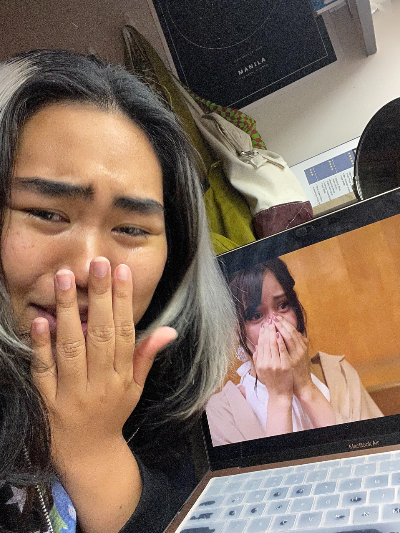
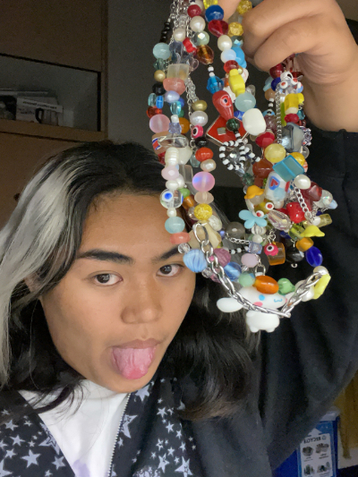
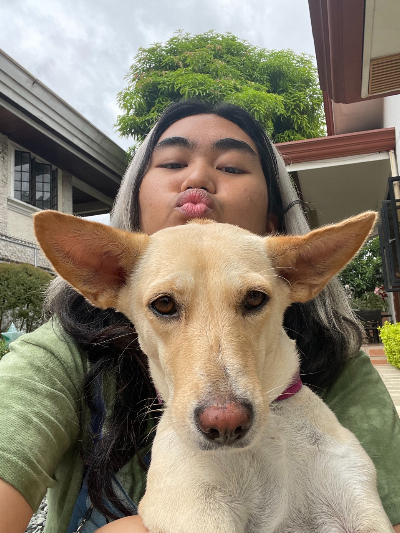
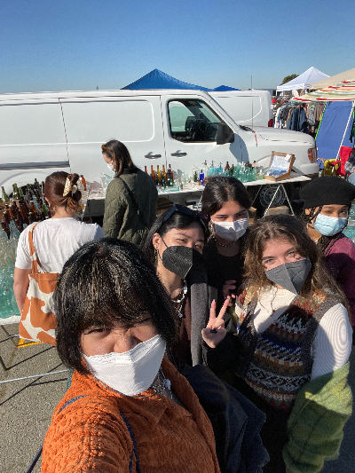

Welcome to Sabrina's Site! She is a second year Design major at the University of San Francisco. Sabrina is a Libra who was born on September 28, 2002 and was raised in the Philippines before moving to the United States. Not only does she have three sisters but she also went to an all-girls school until her entire life so she was surrounded by a lot of feminine energy. Now, she's working as a Designer for the Graphics Center.


During her free time, she likes spending her time mostly on streaming sites like Netflix and Youtube. Sabrina's mostly interested in watching anime, crime, drama, and reality dating shows. She may or may not have some sort of obsession with reality dating shows especially with Love Island, but she is also addicted to any kind of show or movie with crime/mystery genre as the genre. Read More! She even listens to various podcasts regarding true crime. Her Youtube subscription list is the complete opposite of her taste in Netflix since she likes to watch comedy videos and random vlogs. She also likes to scroll through different social media apps like Tiktok, Instagram, and Pinterest. Sabrina likes to absorb random content which is why she loves to go on Tiktok and Instagram since it's so easy to kill time through those apps. Though, Pinterest is more for daily inspiration for art, fashion, and even food. Other than that she likes to make necklaces in her free time and is currently running a small business where she sells handmade jewelry.


Outside of all this, Sabrina isn't the most physical active person. She usually likes to stay indoors in her bed since she enjoys the comfort of having "me" time or or spend time with her dog, Milky. Read More!Occasionally, you'll see her go out with her friends and maybe even go out to the park (but only if the weather is warm enough). Fun fact: Sabrina doesn't go out that much since her tolerance for the cold is not that high since the weather in the Philippines cannot compare to the weather in San Francisco